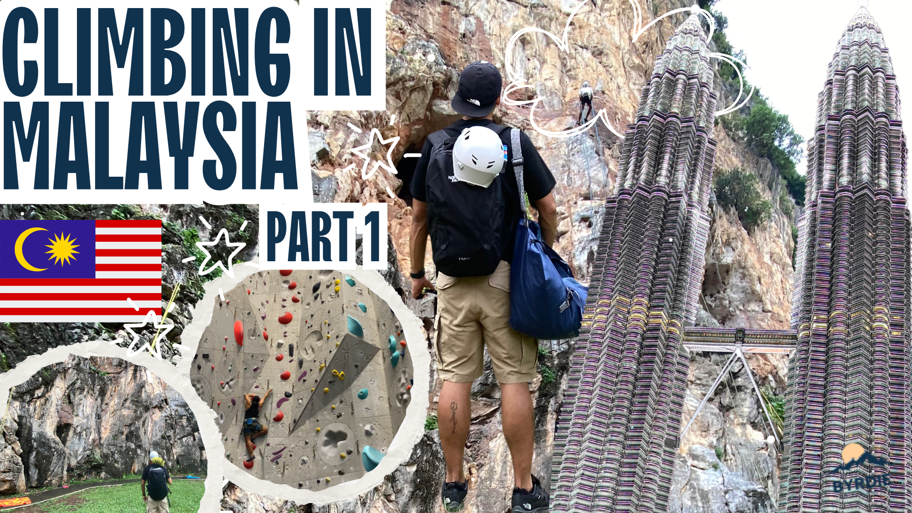
Malaysia Moments
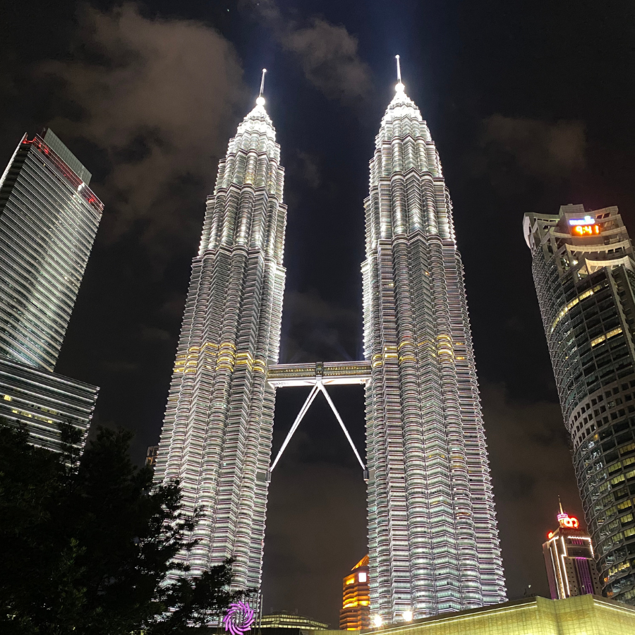
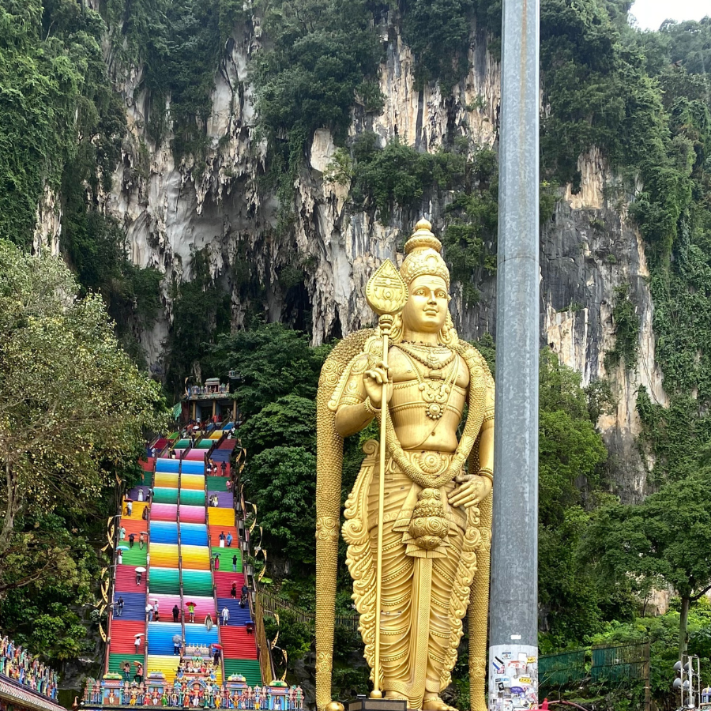
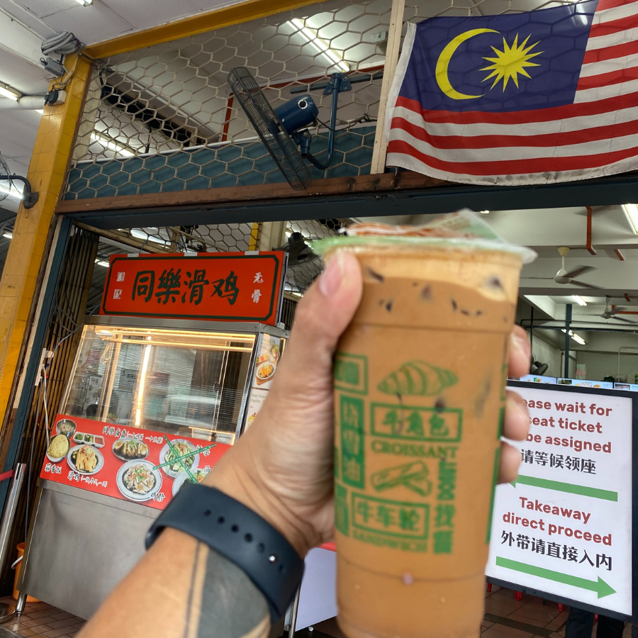
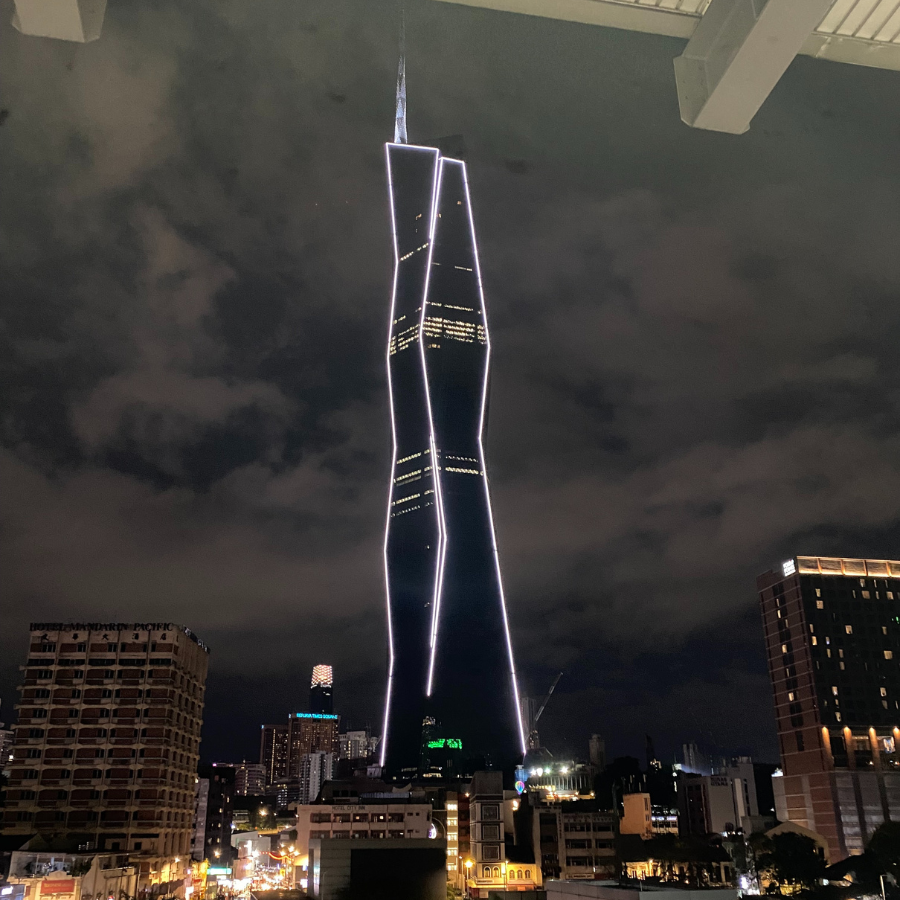
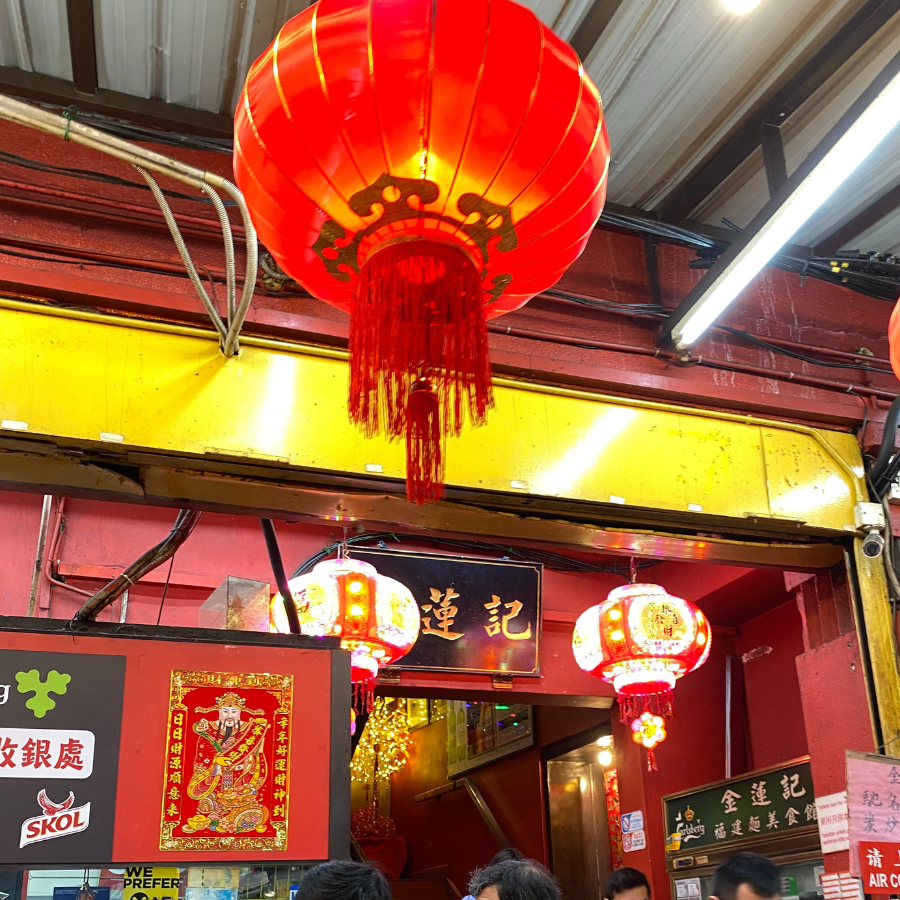
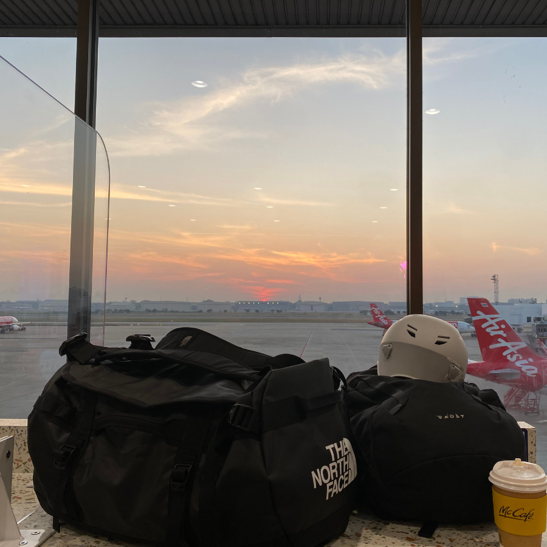
Welcome Back to ByrdieOnTheRocks!
Hi fellow climbers, and welcome back to ByrdieOnTheRocks! If you’ve been following my blog, you probably know that I like to begin with a short introduction and a little disclaimer. But if you’ve heard it before, feel free and jump into the story 👇.
This blog is a personal space where I share my own experiences as an amateur rock climber while also practicing my coding and web development skills. It is not meant to be a technical guide or a professional climbing manual. Instead, I’m here to share my journey, including stories and casual tips about locations I’ve visited. Please make sure to do your own research, prioritize safety, and consult certified experts when you plan your own adventures.
From City Breaks to Climbing Dreams
In my last blog , I briefly mentioned how excited I was for my first overseas climbing trip. Before this journey, I had been dreaming about experiencing different parts of the world through climbing. I wanted to explore not just the routes, but also the cultures and stunning landscapes across Asia, starting with countries close to home.
Before I became a climber, I traveled quite a bit. But most of those trips focused on cities, music festivals, and fun nights out. I rarely paused to soak in nature or truly connect with the local way of life. Now that I’m a bit older (and hopefully wiser), my priorities have shifted. Climbing helped with that.
How Climbing Changed My Perspective
Climbing has completely changed how I view travel, nature, and even myself. It’s no longer just a sport to me—it’s something that grounds me. It helps me grow both mentally and physically, and it has introduced me to things I never expected to fall in love with, like being surrounded by nature, learning about different cultures, and embracing the present moment. These days, I find joy in the simple things.
But I’ll save the deep stuff for another day. Let me take you through what actually happened on my first climbing trip outside of Thailand.
The Climbing Adventure in Malaysia Begins
This trip came together because one of my great friends had to return to Malaysia for a few months. Naturally, I wanted to visit her—and more importantly, make sure she had a belayer. I didn’t want her to spend the entire time bouldering! So, I booked a flight and we planned a climbing trip around
Kuala Lumpur
in January 2025.
Weather Surprises and Last-Minute Changes
Our plan was simple: two days at indoor gyms and two days climbing outdoors. Yes, there are outdoor climbing spots in Kuala Lumpur! One of the most famous is
Batu Caves
, which is only about 30 minutes from the city by car. I’ll be writing about that experience in my next post.
But as soon as I landed, the weather decided to challenge us. Heavy rain poured down and didn’t stop. I had expected warm but manageable weather—Malaysia is not far from Thailand after all—but I was wrong. So I crossed my fingers and hoped we’d get at least one dry day to climb outdoors.
Camp 5 in Petaling Jaya – First Gym Stop
Since the rain kept us indoors, we headed to
Camp 5
in
Petaling Jaya
. It’s massive and super impressive.
That’s when I realized—I forgot my harness. Classic. I couldn’t believe I had packed everything except that. Thankfully, Camp 5 rents out lead harnesses, which saved the day. I still had to figure something out for the outdoor portion, but for now, I focused on enjoying the session.
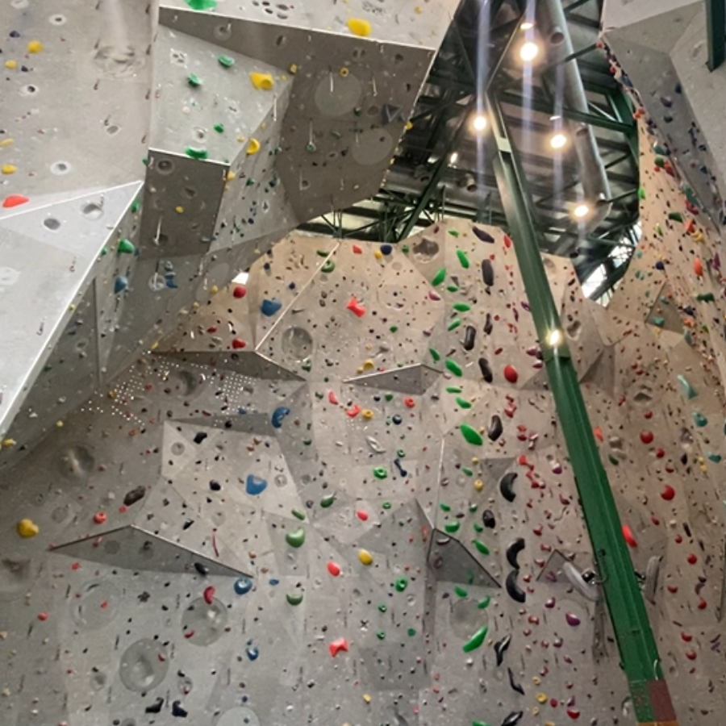
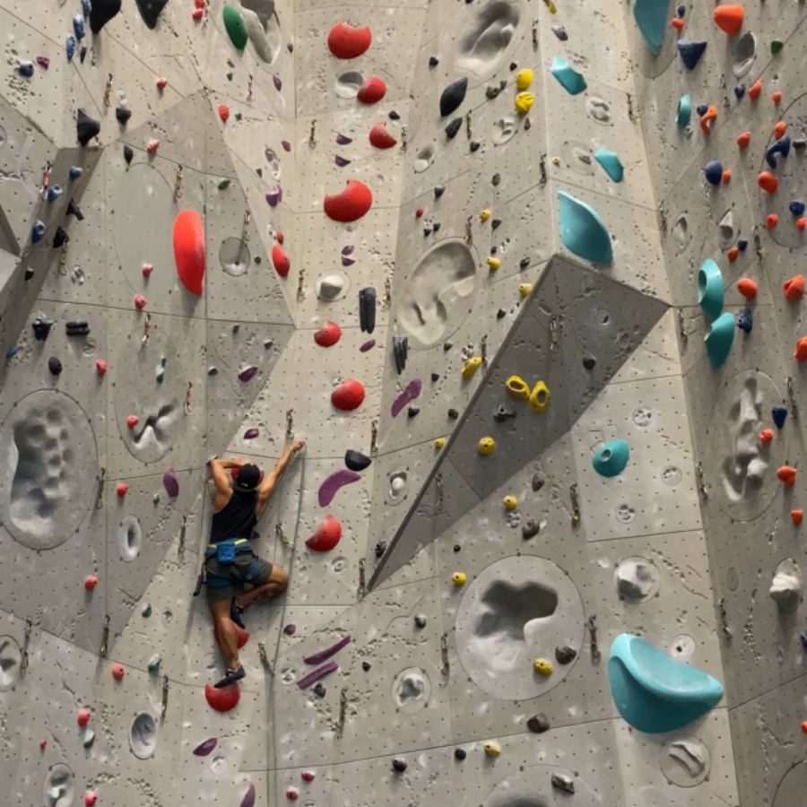
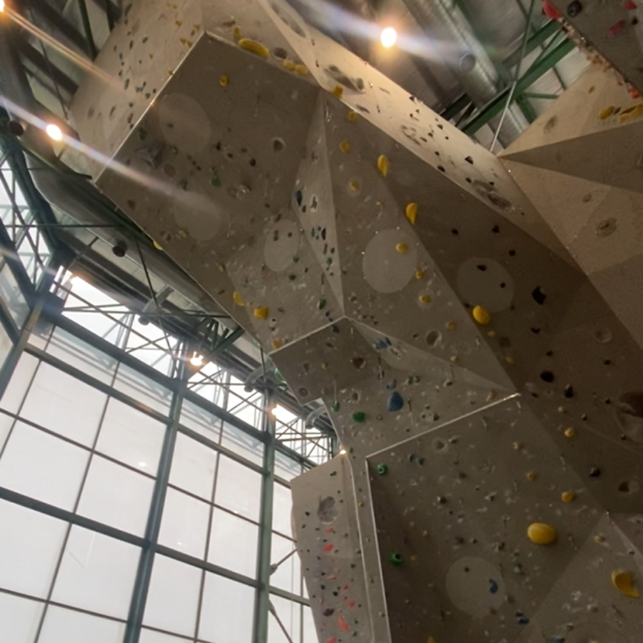
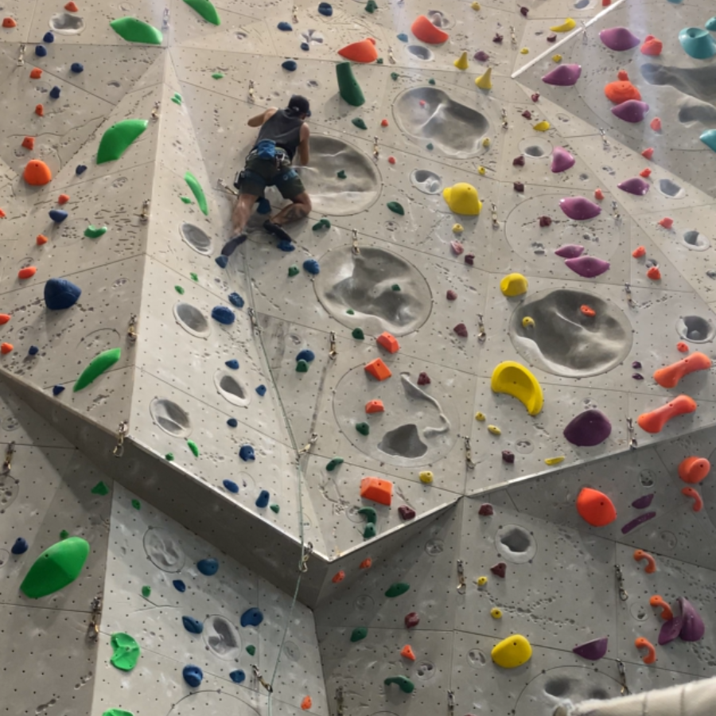
Prices and Gear Rentals in Malaysia
Camp 5
’s day pass costs MYR 31.50 (about $7 USD), which is actually cheaper than most gyms in Thailand, where a pass can be around THB 500 ($14). Rope rental was MYR 50 (roughly $11 USD) — a bit more than I’m used to, but still very reasonable.
Many Malaysian gyms, including Camp 5, offer gear rentals. This makes it easier for travelers to enjoy climbing without too much stress, even if you forget something like I did.
Route Setting and Local Vibes
After our session (we stayed until closing at 10 PM), we were starving. I was worried we wouldn’t find food, but our local friend saved the day by taking us to some incredible late-night food spots. I’ve been to Kuala Lumpur before, but this was the first time I truly appreciated the local cuisine. I think climbing has helped me value cultural experiences more deeply.
We found amazing, authentic food in places open 24 hours. So even though we couldn’t climb outdoors yet, the trip was already delivering some solid highlights.
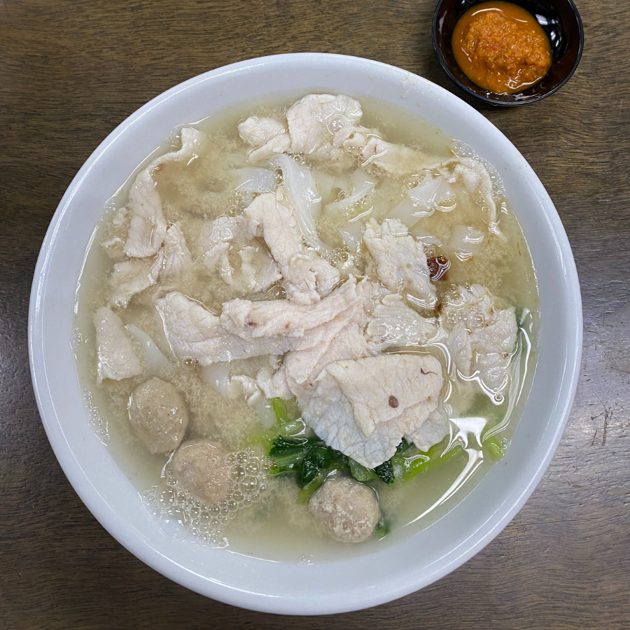
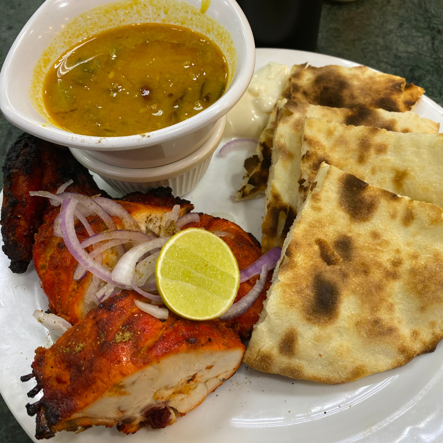
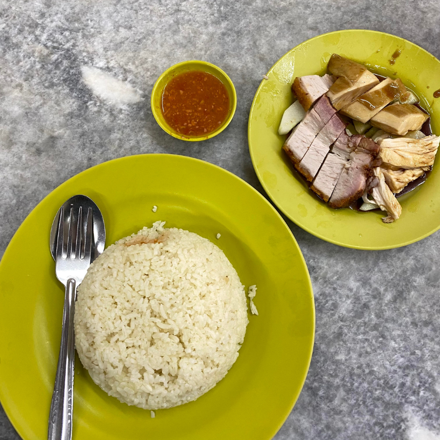

Rain, Temples, and Plan B
The next morning, the rain was still hanging around. We headed to Batu Caves anyway, hoping for a miracle. On the way, the rain picked up again. We started considering backup plans and decided to stop at the famous Sri Subramaniar Swamy Temple at Batu Caves. Even in the rain, the temple was packed with visitors. So if you’re planning a trip, expect a crowd, rain or shine.
Taman Cabaran: Challenger Park Gym
We shifted our focus to another climbing gym called
Taman Cabaran (Wall Climbing) Challenger Park
in Putrajaya, about 35 kilometers from Kuala Lumpur, near the airport. This gym is part of a government-run sports complex and is even used by national-level athletes. As we drove there, the weather started to improve, and sunlight finally peeked through the clouds.
Taman Cabaran is gigantic. Some routes, especially on the big overhang wall, weren’t graded, while others had grades, so we had to estimate our own limit. Since this is a government facility, the entry fee was very cheap—but keep in mind that they do not rent ropes. Luckily, the staff helped us connect with someone who could rent one out.
Also, a heads-up: the gym closes for a one-hour lunch break, which is good to know when planning your visit.
Most of the routes were quite technical and challenging. I saw many strong local climbers here, and the vibe was very different from Camp 5. I personally loved the challenge and highly recommend this spot to anyone who enjoys a more serious training environment.
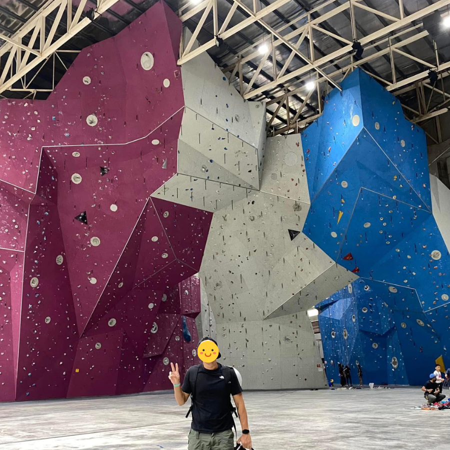
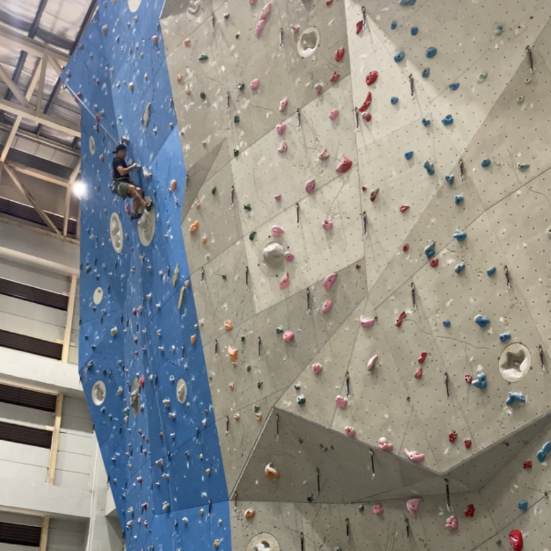
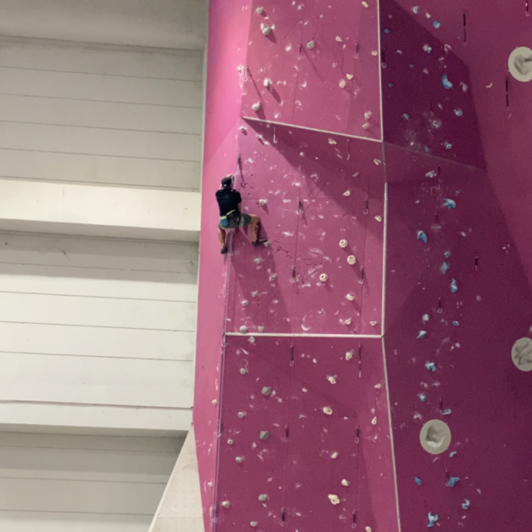
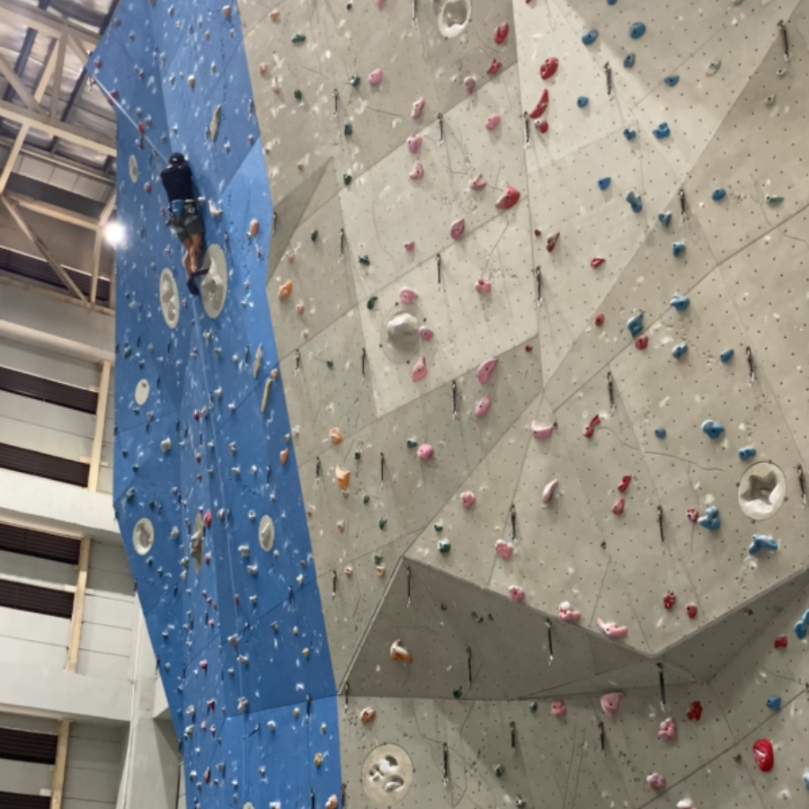
Closing Thoughts
Although our outdoor climbing dreams were delayed by rain, this trip still turned out to be a meaningful and unforgettable adventure. I experienced new climbing environments, discovered amazing food, and gained a deeper appreciation for Malaysia’s climbing culture.
Stay tuned for my next post, where I finally get to share the experience of climbing outdoors at Batu Caves. Spoiler alert: it was worth the wait.
Until then—climb safe, embrace the culture, and keep exploring
ByrdieOnTheRocks :)